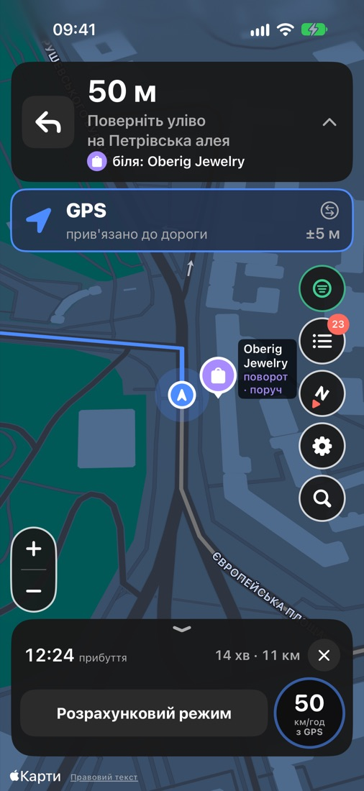
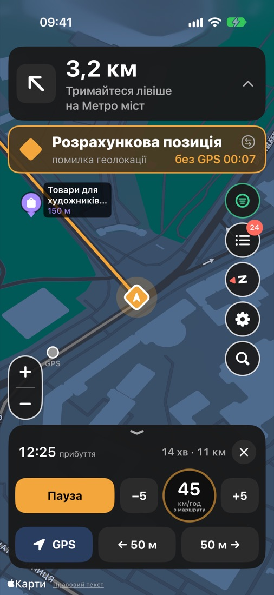
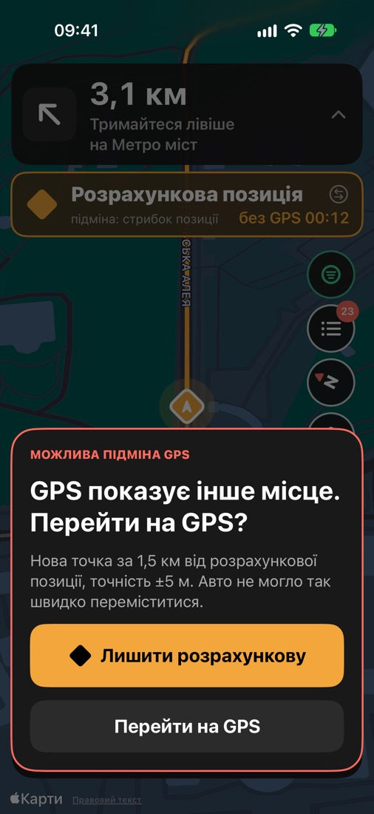
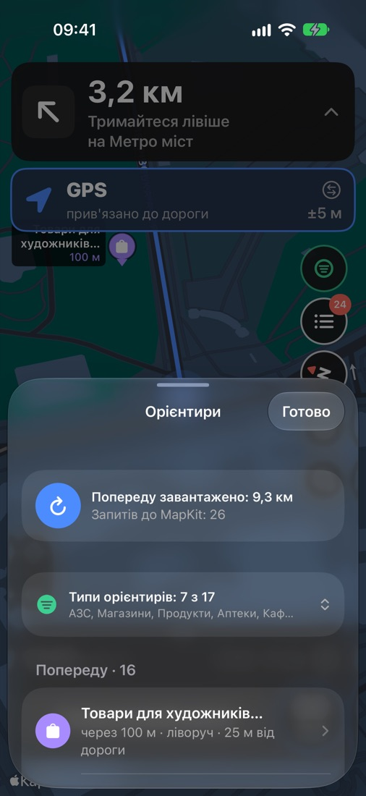
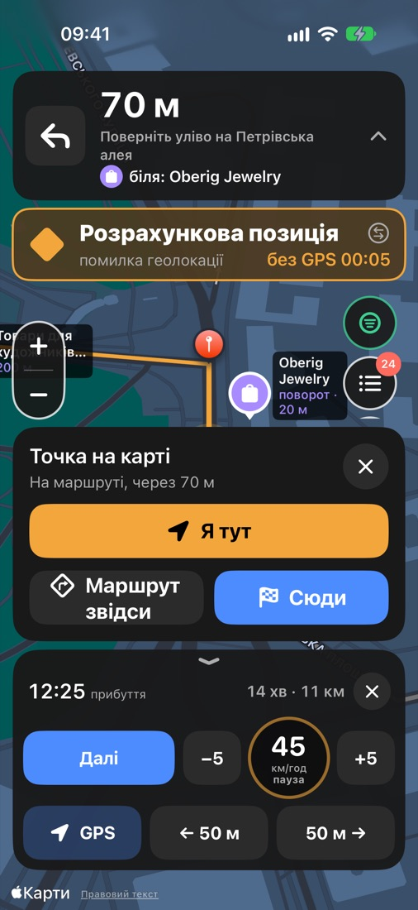
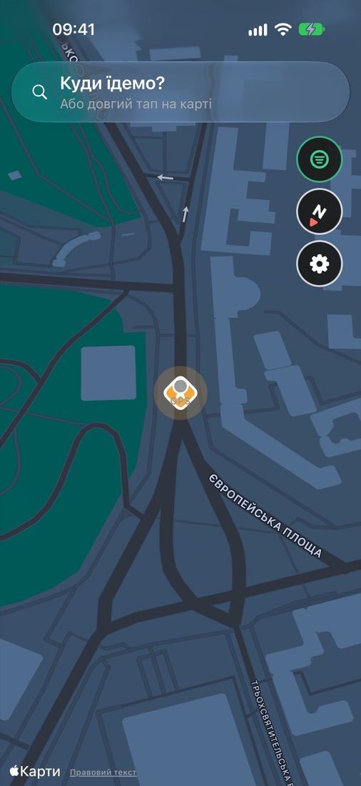
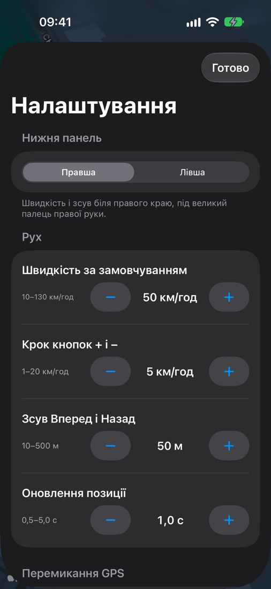

Keeps driving when GPS goes dark.
A car navigator for iPhone that doesn't lose you when GPS drops out or gets spoofed. It keeps moving your position along the route, and you can correct it in a tap.
Not on the App Store: you put it on your phone from a Mac with a free Apple ID.
What happens when GPS fails
Jamming, spoofing, tunnels, dense city blocks. The app notices on its own and switches modes, so you don't have to.
GPS
Your position comes from GPS and is always snapped to the route line.
Lost or spoofed
A location error, a stale fix, poor accuracy, or a jump no car could make.
Dead reckoning
The dot keeps driving along the route at the route's average speed, your last GPS speed or your own.
Careful return
After 5 s of good signal GPS takes over again. If it shows somewhere far away, you're asked first.
Made for a glance at the wheel
Dark map, big buttons, the mode always in color: blue is GPS, amber is the estimate.







The app's interface is in Ukrainian.
Everything for a road without GPS
And nothing that needs an account.
Correct in one tap
±5 km/h, Pause, 50 m back or forward, or tap the route line to put yourself right there.
Spoof detection
Flags jumps a car couldn't make and sharp turns where the route goes straight.
Ukrainian voice
Prompts before and at every turn, over your music, with the screen off and through the car speakers.
Works offline
The route, its steps and its line are saved on the phone, so navigation carries on without internet.
Landmarks ahead
17 kinds of places along the road. Pass one, tap “I'm next to it”, and the dot jumps there.
Motion sensors
The dot waits at red lights, and a turn felt by the gyroscope offers to pull it to the next turn.
Took a wrong turn?
Long-press where you really are and pick “Route from here” to the same destination.
Your places
Home, work, favourites and recent destinations, right above search suggestions.
Left or right hand
Big buttons, and the bottom panel mirrors for whichever hand reaches the phone.
Dims itself
Optional dimming after 30 s without touches; any touch brings the screen back.
Test it at home
GPX replay with a GPS loss and a fake 1.5 km jump built in, so you can see every mode from the sofa.
No Russia or Belarus
Addresses there are hidden from search and can't be saved or routed to.
Private by design
No accounts, no servers of its own, no analytics or tracking. Your position stays on the phone. Only route requests and place searches go to Apple Maps.
Apple Maps under the hood
Free and without API keys. Map data in Ukraine isn't perfect, so map, routing and search sit behind interfaces and another provider can be added later.
Put it on your iPhone
You need a Mac with Xcode, an iPhone on iOS 27 and a free Apple ID. About an hour the first time; with a free account, re-install every 7 days.
Step-by-step guideIf you already have Homebrew, these Terminal commands download the code and open the project:
git clone https://github.com/foxfollow/stone-navigation-emulation.git
cd stone-navigation-emulation/StoneNavigationEmulation
brew install xcodegen
xcodegen generate && open StoneNavigationEmulation.xcodeproj
Then in Xcode pick your team and change the Bundle Identifier (step 5), connect the iPhone and press ▶. No Homebrew yet? Start with the guide.